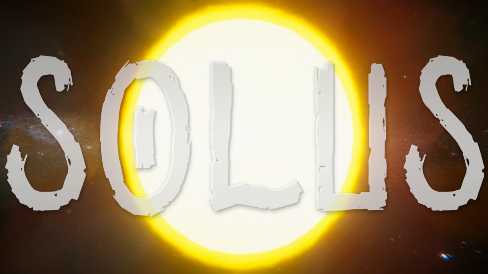
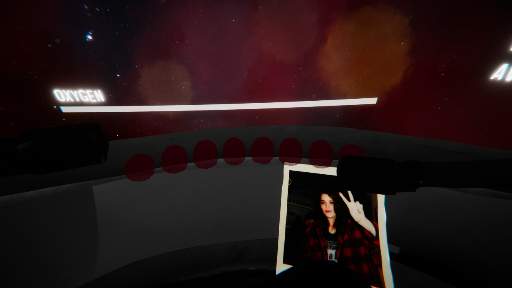
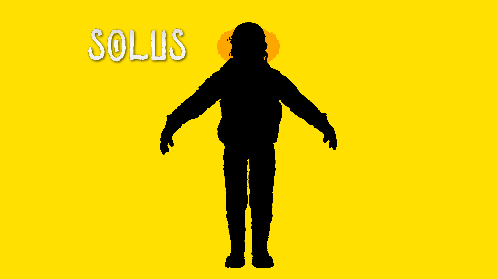
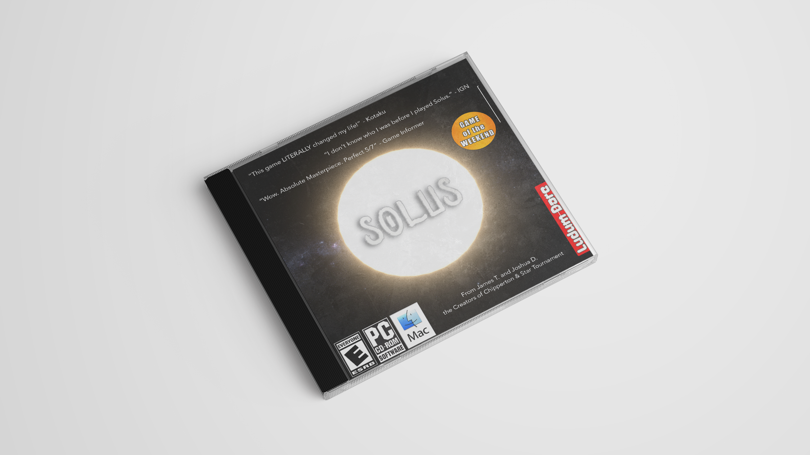

Features
Zero-G Movement
Navigating in space is tricky. Master momentum to survive.
Space Setting
Drift through the void near the ISS and Earth.
Time Pressure
Oxygen is limited. Make every movement count.
Tech Specs
Engine
Unity
Mode
Single-Player
Platform
Windows, macOS, Linux
Theme
Deeper and Deeper
Released
April 27, 2021
Status
Game Jam (Released 2021)